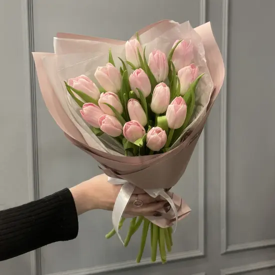

Тюльпан — весенний цветок, символ чистой любви, счастья и прихода весны. Его изящные бутоны и яркие краски поднимают настроение после долгой зимы.
Тюльпаны родом из Центральной Азии, но настоящую популярность они приобрели в Голландии в XVII веке. В Голландии даже случилась "тюльпаномания" — луковицы редких сортов стоили целые состояния. Сегодня Голландия остаётся главным поставщиком тюльпанов в мире. Существует более 3000 сортов тюльпанов самых разных форм и цветов: от классических красных и жёлтых до экзотических зелёных и фиолетовых. Есть махровые сорта, напоминающие пионы, бахромчатые, попугайные с причудливыми лепестками. Особенность тюльпанов — они продолжают расти в вазе, слегка изгибаясь в сторону света. Это создаёт живые, динамичные композиции. Тюльпаны дарят на 8 Марта, дни рождения и просто как знак внимания.